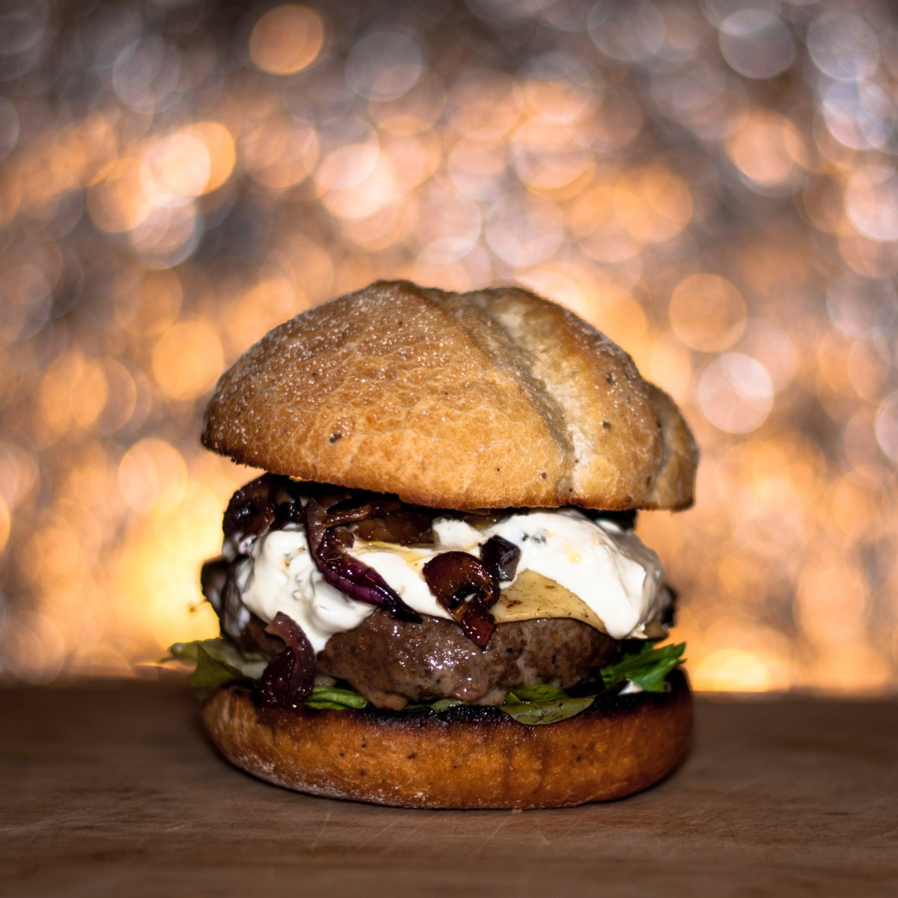

Lamb Sliders with Dill Greek Yoghurt

These Lamb Sliders with Dill Greek Yogurt
taste like a classic Greek gyro in bite-sized form.
Ingredients
- 1 lb ground lamb
- 2 1/2 tsp dried rosemary
- 2 tsp dried oregano
- 2 large garlic cloves, grated or finely minced
- 1/4 small onion, grated or very finely minced
- 1 tsp kosher salt
- 1 large egg yolk
- 3 tbsp plain breadcrumbs (panko are fine)
- 2 tbsp + 1 tsp olive oil
- 1 tsp dried dill
- 2 tsp lemon juice
- 1/2 cup plain non-fat Greek ygourt
- 1 medium cucumber, very thinly sliced
- 15 mini pitas
Method
- Add lamb, rosemary, oregano, garlic, onion, salt, egg
yolk, breadcrumbs, and 1 teaspoon olive oil to a large
bowl. Mix until combined. Do not over mix.
- Separate the mixture into 15 loose balls. Flatten into
patties about the size of the pita or slider buns.
- Heat a large griddle or cast-iron skillet to a medium-high
heat, drizzle 1/2 tablespoon of olive oil. Add half of the
patties to the griddle or skillet, use a spatula to flatten
the patties as much as your can. Cook until golden brown and
crispy, about 2-3 minutes. Flip and cook another 1-2 minutes.
- Repeat with 1/2 tablespoon olive oil and the remaining patties.
- While the patties cook, add the Greek yogurt, dill, lemon juice
and teaspoon olive oil to a small bowl. Season with salt and
pepper. Stir until combined. Season to taste with salt and pepper.
- To assemble: Cut a slit in each pita wide enough to fit patties
in. Stuff cooked patties in the pita, spoon a little bit of dill
sauce in and layer cucumbers on top. Garnish with more dried or
fresh dill.
Home